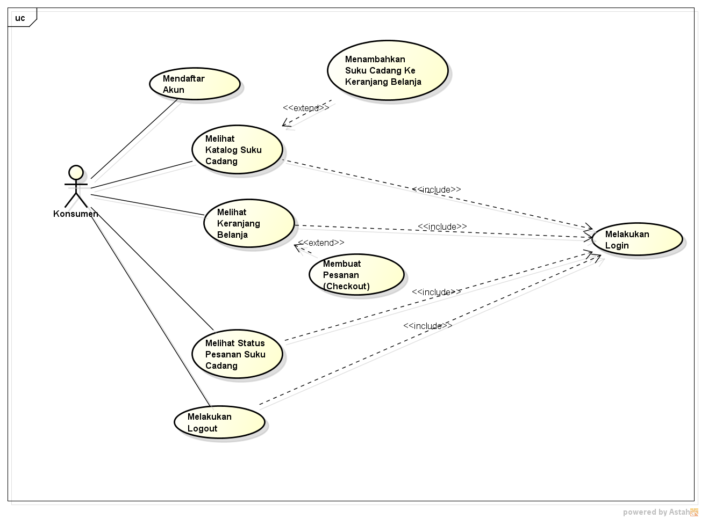

Hasil saya menyadur :
1. Nilai Kehadiran dihitung jika membuat file index.html pada setiap direktori pertemuan github (angka), contoh 4 untuk pertemuan 4
2. Nilai Tugas dihitung dari kualitas isi konten file index.html pada tiap pertemuan yang saya sadur
3. Usecase Diagram dan Deskripsi Usecase
1. Usecase Diagram untuk pengguna utama perangkat lunak
2. Usecase Diagram untuk pengguna admin perangkat lunak
4. Usecase Diagram : Menggambarkan hubungan/interaksi/apa yang bisa dilakukan aktor dengan sistem
5. Aktor = siapa yang menggunakan sistem / pengguna / user.
Aktor dibagi menjadi 2 yaitu aktif dan pasif.
6. Usecase Diagram tidak menjelaskan secara detail tentang penggunaan usecase, namun hanya memberi gambaran singkat hubungan antara usecase, aktor, dan sistem.
• Extend => perluasan/pengembangan usecase inti (panah ke arah usecase inti/induk)
• Include => usecase tertentu memiliki kondisi/syarat/ketentuan yang harus terpenuhi/dibutuhkan sebelum dijalankan (panah ke arah usecase yang diperlukan).
Deskripsi Usecase : mendeskripsikan nama usecase
contoh: login => Digunakan konsumen untuk masuk ke dalam
7. Aplikasi pemesanan suku cadang
Skenario Usecase : Setiap Usecase Diagram dilengkapi dengan scenario usecase yang merupakan alur jalannya proses usecase dari sisi aktor dan sistem.
• Skenario usecase dibuat per usecase terkecil, misalkan untuk generalisasi maka skenario yang dibuat adalah use case yang lebih khusus.

Download file latihan astah disini
Download file word disini